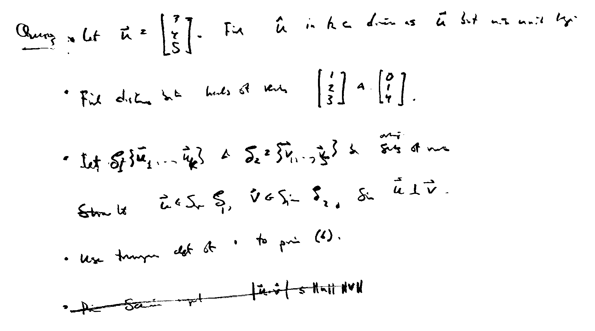

02.09.07
Habemus Presidentam
The Crimson and Globe are reporting that Drew Gilpin Faust, Lincoln Professor of History at Harvard and Dean of the Radcliffe Institute, will be voted the next president of Harvard.
Permalink Comments off
Teaching, Training, and Advising for the Harvard Mathematics Department. Oh, and some computer stuff.
The Crimson and Globe are reporting that Drew Gilpin Faust, Lincoln Professor of History at Harvard and Dean of the Radcliffe Institute, will be voted the next president of Harvard.
Permalink Comments off
I’m glad to be starting another exciting semester, teaching Math 21b and Math 20.
Permalink Comments off
There’s an interesting article in the Washington Post this morning about cursive writing and how it’s going by the wayside. With so many other things to teach, and the prevalence of word processing for hard-copy writing, penmanship doesn’t seem to have a high priority. On the last SAT test, only 15% of the students wrote their essays in cursive. The rest printed–block letters.
I’m instinctually inclined to say that this is just this week’s sign of the coming apocalypse, but I can’t really bring myself to care that much. While I agree penmanship is a virtue, is it more important than math?

Of course, I’m one to talk. My chicken-scratch is so horrible that my notes have a half-life. After a year I can’t read it anymore.Blogged with Flock
Permalink Comments off
This from today’s Boston Globe:
CAMBRIDGE — Harvard University today begins a new effort to figure out how to improve teaching and make it a bigger factor in whether professors get tenure or raises.
If successful, the initiative could counter Harvard’s image as a school that allows professors to neglect undergraduates in favor of the research that wins them grants, book prizes, and fame.
I would also hope the initiative can improve the quality of education for undergraduates. The committee intends to report on February 1 what recommendations they have, some of which can be adopted immediately and some of which will take some time. One of the ideas listed in the article that I find interesting is this:
Harvard already has a system for students to evaluate their professors, but Skocpol said she would like to see professors evaluating one another’s classes as well, just as they critique one another’s academic articles and books. The point, she said, would be not just to judge but to expose professors to new ideas and encourage every faculty member, young or old, to think about ways he or she can improve.
That sounds good to me. As non-tenure-track teaching faculty, I suppose it’s only natural to want more attention paid to teaching. But my reasons are not only selfish. I know my department has some excellent teachers, and I would like to see all our great teachers encouraged to further the state of the art of teaching just like they have furthered the state of mathematics.
Permalink Comments off
I got shown an article from InsideHigherEd called “Advanced Yes, Placement No“. It’s about Phil Sadler’s report to the AAAS about the affect of AP courses on college choices and grades.
The researchers found that students who had taken AP courses — even those who had done well on the AP exams — did only marginally better than students who had not taken AP courses. Other factors, such as the rigor of mathematics taken in high school, were found to have a strong impact on whether students did well in college-level work in the sciences.
Sadler goes on to say that AP classes are not bad per se, but they should not be regarded (despite their name) as a substitute for college level material. I would agree that the emphasis we provide in college on conceptual thinking is not taught in AP courses. Some of the AP questions are actually pretty good, but they are graded in such a way to deemphasize the parts of the problems we think are the most important. Students may come to college thinking they have mastered calculus, but some of them — even those with 5’s — really only know the techniques.
A reader comment relates a story from my alma mater so I have to refer to it, too:
I graduated high school in 1965. Took AP Chemistry but the college I was going to go to (Chicago) did not accept AP credit so I did not pay the fee to take the test. I did ask the admissions office why they did not recognize the test and was told, in no uncertain terms, that if I did not think that they could do a better job teaching me Chemistry than some teacher in my high school then I should not bother paying them tuition. They were right. [I suspect that Chicago now does give some credit for AP’s, but am not sure.
–Mark Weinstein, U.S.C.
Permalink Comments off
There’s an interesting article in Business Week called “Math Will Rock Your World.” It talks about a news service that maps articles into a large space and can find articles related to a specific one by comparing the text. But its major point is that math is having more and more applications to the business world.
The world is moving into a new age of numbers. Partnerships between mathematicians and computer scientists are bulling into whole new domains of business and imposing the efficiencies of math. This has happened before. In past decades, the marriage of higher math and computer modeling transformed science and engineering. Quants turned finance upside down a generation ago. And data miners plucked useful nuggets from vast consumer and business databases. But just look at where the mathematicians are now. They’re helping to map out advertising campaigns, they’re changing the nature of research in newsrooms and in biology labs, and they’re enabling marketers to forge new one-on-one relationships with customers. As this occurs, more of the economy falls into the realm of numbers. Says James R. Schatz, chief of the mathematics research group at the National Security Agency: “There has never been a better time to be a mathematician.”
Thanks to Oliver for the reference.
Permalink Comments off
Derek Bok, former president of Harvard and eponymous for the Derek Bok Center for Teaching and Learning here, had an editorial called “Are colleges failing? Higher ed needs new lesson plans” in the Boston Globe on December 18. I can’t link to it any more because it’s moved to their paid-for archives, but you have LexisNexis you can find it. He writes:
Critics of American colleges typically attribute the failings of undergraduate education to a tendency on the part of professors to neglect their teaching to concentrate on research. In fact, the evidence does not support this thesis, except perhaps in major research universities. Surveys show that most faculty members prefer teaching to research and spend much more time at it. The problem is not that faculty are uninterested in their students but that they do too little to explore new and possibly more effective ways of teaching and learning.
He goes on to say that university faculty don’t research teaching methods and education because they aren’t trained to do so as graduate students. I think this explains the need for a center like the Bok Center. When students think early about the issues of teaching and learning, not only do they become better teaching assistants or teaching fellows, they are equipped to guide their own improvements throughout their academic career.
Permalink Comments off
Here’s the story of a guy who’s got some of his priorities straight. Farris Hassan, 16, of Ft. Lauderdale, traveled secretly to Iraq to practice what he learned in his high school about “immersion journalism.” He’s promising to talk about what he saw there, but has to catch up on his schoolwork:
“I have a big calculus test on relative rates of change that I need to study for, so I have a lot of things going on right now,” Hassan said.
Good luck on the test, Farris, and we’re looking forward to hearing about your experience.
Permalink Comments off
Copyright ©2008 The President and Fellows of Harvard College.